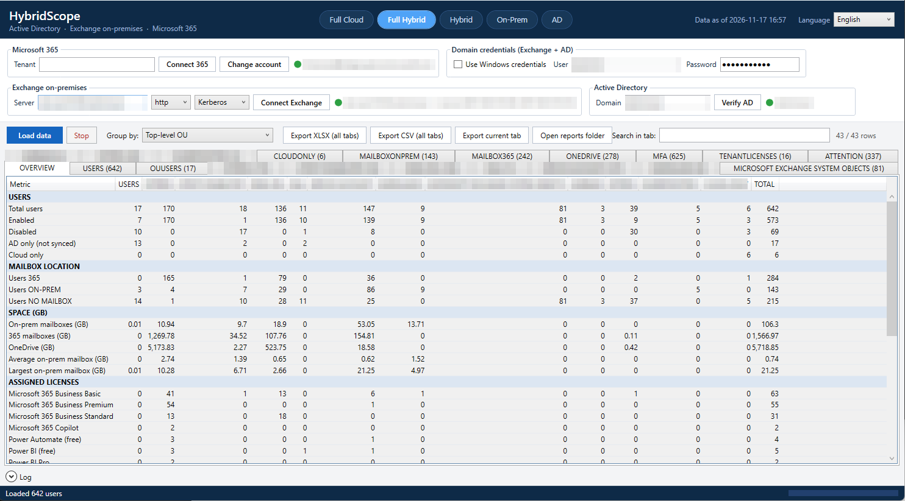
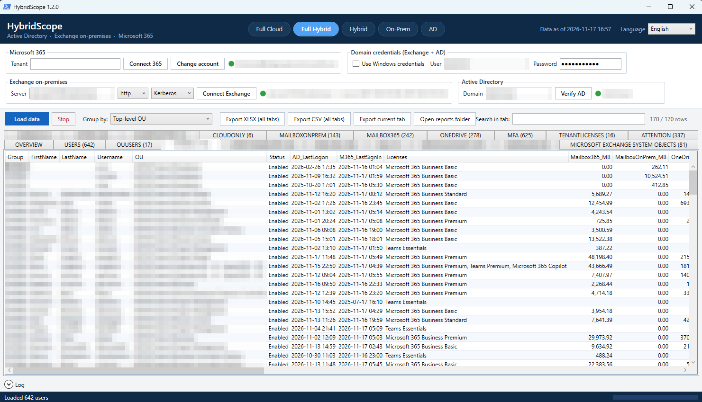
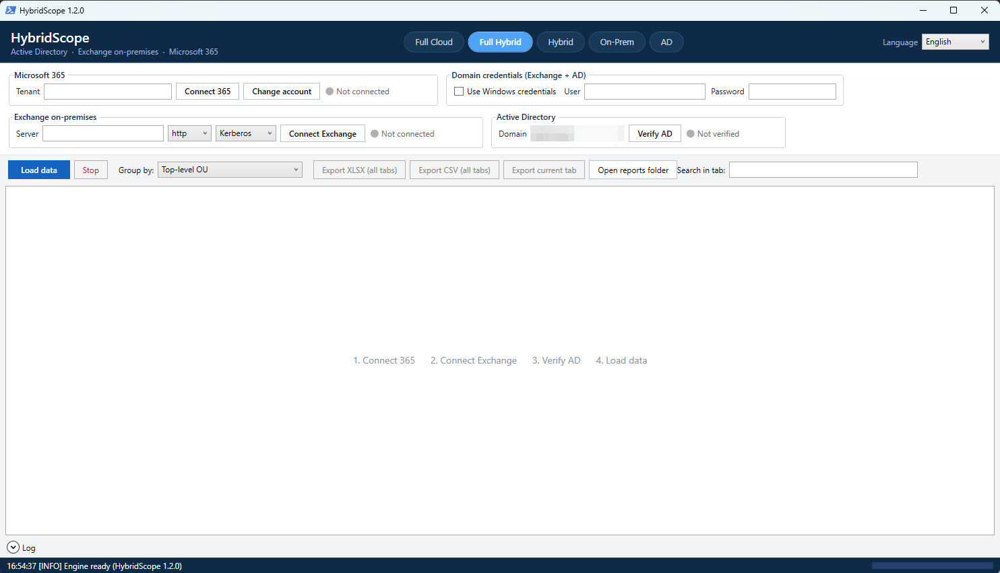
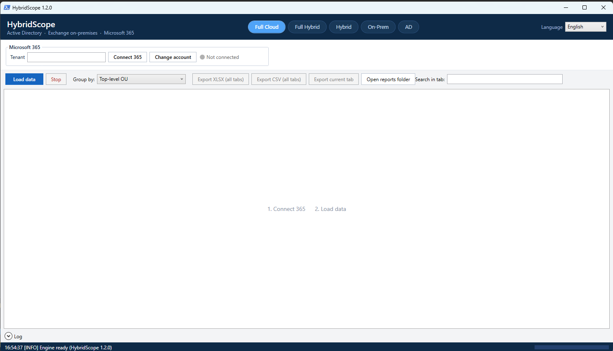
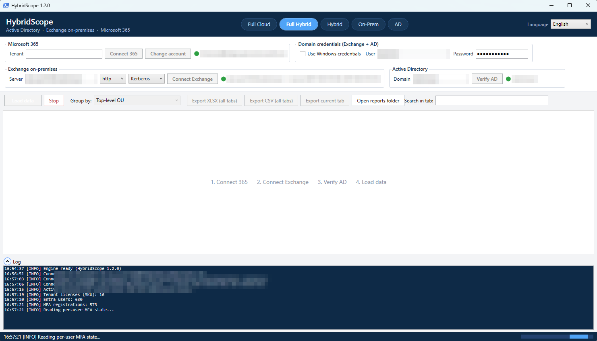

One view of your hybrid identities: Active Directory + Exchange on-premises + Microsoft 365. Who is on-prem and who is in the cloud, mailbox sizes, licenses, MFA and last sign-in, in one window. Exportable to Excel.

A free PowerShell tool for Windows with an RVTools-style interface. It only reads: it never changes anything in AD, Exchange or Microsoft 365.
ON-PREM / 365 / NO MAILBOX comes from Exchange and Graph, never guessed from the mailbox size.
Registered or not, which methods, the default one and the legacy per-user state, for every user.
On-prem mailboxes to migrate, licensed users without MFA, licenses on disabled accounts, inactive and unsynced accounts.
ImmutableId vs AD anchor, accounts that will soft-match or conflict at the next sync, provisioning errors.
Formatted Excel or CSV. Everything, a preset (sign-ins, licenses, migration, MFA, directory) or only the columns you tick.
With a preset, HybridScope reads only the data those columns need: a sign-in report does not wait for mailboxes and MFA.
Double-click a user: AD, mailboxes, OneDrive, MFA, licenses, AD and Entra groups and roles in one window.
-Auto with certificate sign-in: a daily Excel report, a LATEST copy to share and a trend history.
Windows credentials or a domain user and password with Kerberos. English and Italian interface.
One click at the top of the window: tabs, columns and overview adapt to the sources you have.
| Mode | Sources | What you get |
|---|---|---|
| Full Cloud | Microsoft 365 | Users, licenses, Exchange Online mailboxes, OneDrive, MFA, last sign-in |
| Full Hybrid | Microsoft 365 + Exchange on-prem + AD | Everything: on-prem vs 365 location, mailboxes on both sides, MFA, licenses, AD data |
| Hybrid | Microsoft 365 + AD | AD users merged with their cloud accounts: licenses, Exchange Online, OneDrive, MFA |
| On-Prem | Exchange on-prem + AD | AD users with their on-prem mailboxes: size, database, quota, last access, inactivity |
| AD | Active Directory | Users, OUs, status, last logon, password age, inactivity |
Sensitive data (users, domains, servers, OU names) is blurred.




Windows 10 / 11 or Windows Server 2016+, Windows PowerShell 5.1 (built into Windows).
C:\HybridScope.Set-ExecutionPolicy -Scope CurrentUser RemoteSigned
Get-ChildItem C:\HybridScope -Recurse | Unblock-FileStart-HybridScope.cmd. Missing modules (Microsoft.Graph.Authentication, ImportExcel, ActiveDirectory) are offered for installation.Minimum permissions: any domain user for AD, View-Only Organization Management for Exchange, Global Reader plus a one-time admin consent to read-only Graph permissions for Microsoft 365. Your data never leaves your network: HybridScope only talks to your AD, your Exchange server and Microsoft Graph. Full documentation.
MIT license. If HybridScope saves you time, a star, an issue or a one-time donation helps keep it that way.